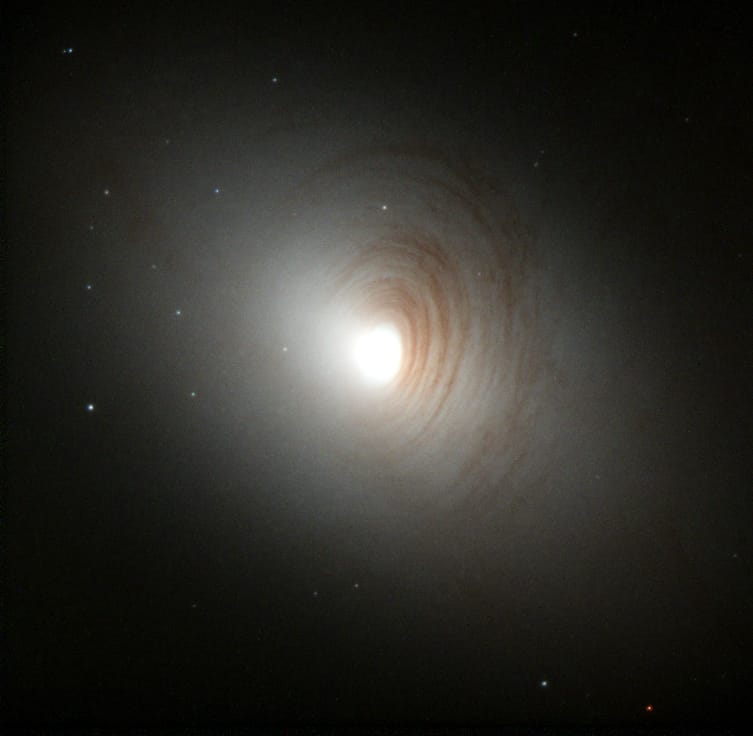

Una galaxia es un conjunto enorme de estrellas, planetas, polvo cósmico, gas, agujeros negros y materia oscura, todo unido por la gravedad.
Es como un vecindario gigante donde viven millones (¡a veces billones!) de estrellas y sistemas planetarios.
Y para que te des una idea de su tamaño:
¡Nuestra galaxia, la Vía Láctea, tiene más de 100 mil millones de estrellas!
Tipos de galaxias (según la clasificación de Hubble):
Galaxias espirales
Tienen forma de espiral, como un remolino.
Brazo central con brazos curvados llenos de estrellas jóvenes.
Ejemplo: La Vía Láctea y Andrómeda.
Galaxias elípticas
Tienen forma de esfera alargada o balón de rugby.
No tienen brazos espirales, son más viejitas y con menos formación de estrellas nuevas.
Van desde redonditas (E0) hasta bien alargadas (E7).
Galaxias irregulares
Sin forma definida, como un manchón cósmico.
Muchas veces se deforman por choques con otras galaxias.
Suelen ser ricas en gas y estrellas jóvenes.
Galaxias lenticulares (intermedias)
Mezcla entre espirales y elípticas.
Tienen disco como una espiral, pero sin brazos.
A veces son galaxias espirales que han envejecido y perdido su forma.

Galaxias más famosas:
-Vía Láctea
Nuestra casa cósmica.
Espiral barrada con más de 100 mil millones de estrellas.
Tarda unos 225 millones de años en dar una vuelta completa.
-Andrómeda (M31)
La galaxia más cercana grande a la nuestra.
También espiral. Se cree que chocará con la Vía Láctea en unos 4 mil millones de años.
-Galaxia del Triángulo (M33)
Otra espiral, más pequeña que Andrómeda, pero parte del mismo grupo local de galaxias.
-Nube de Magallanes (Mayor y Menor)
Dos galaxias satélites de la Vía Láctea, visibles desde el hemisferio sur.
Irregulares, más pequeñas, pero muy importantes para estudios astronómicos.
-Galaxia del Sombrero (M104)
Espiral que parece tener un sombrero por el borde de polvo oscuro.
Súper fotogénica.
-Galaxia Whirlpool (M51)
Hermosa espiral, famosa por tener una galaxia compañera que parece estar fusionándose con ella.